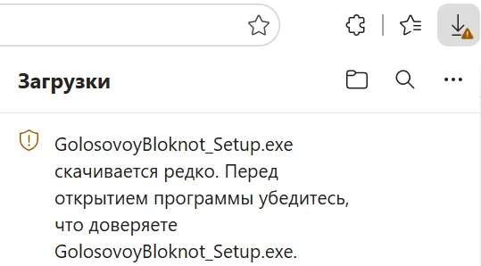
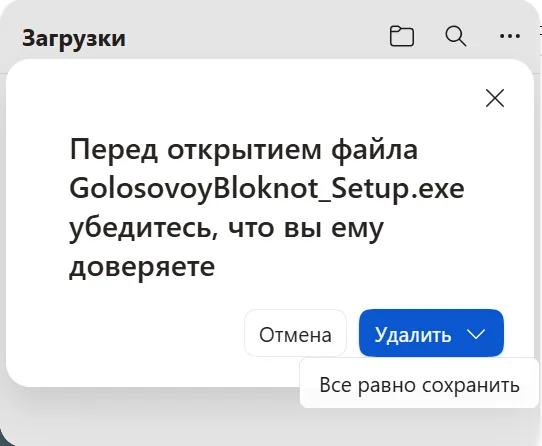
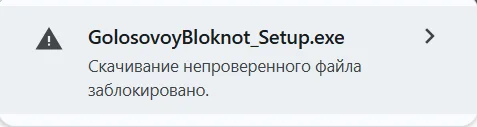
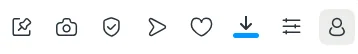
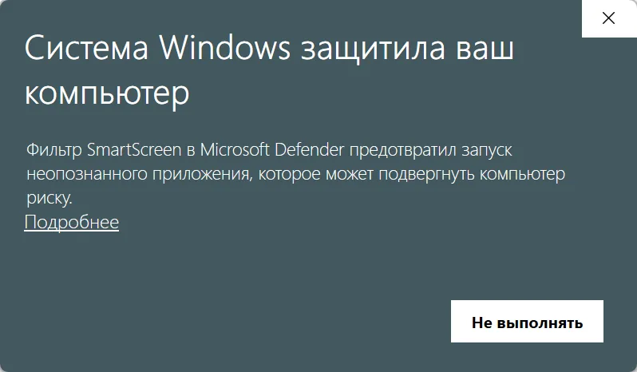
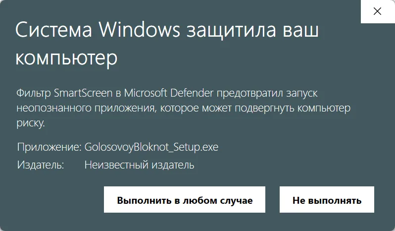

-
1
Откройте скачанный файл
Нажмите значок загрузок вверху справа и выберите GolosovoyBloknot_Setup.exe.
Яндекс Браузер скачивает файл без вопросов.
Нажмите значок загрузок вверху справа. Edge напишет, что файл «скачивается редко», — так он встречает новые программы.
- Наведите на файл → «…» → «Сохранить».
- В следующем окне нажмите не «Удалить», а стрелку рядом → «Все равно сохранить».
- Нажмите на файл в списке загрузок.
Нажмите значок загрузок вверху справа и выберите GolosovoyBloknot_Setup.exe.
Если Chrome пишет «Скачивание непроверенного файла заблокировано»:
- Нажмите на строку с файлом.
- Нажмите «Скачать непроверенный файл» — не «Удалить из истории».
Так Chrome поступает с любой программой, если в нём выключен «Безопасный просмотр», — даже с Opera с официального сайта. В других случаях кнопка называется «Все равно скачать».
Нажмите значок загрузок вверху справа и выберите GolosovoyBloknot_Setup.exe.
Firefox скачивает файл без вопросов.
- Opera спросит, куда сохранить файл, — нажмите «Сохранить».
- Нажмите значок загрузок вверху справа и выберите GolosovoyBloknot_Setup.exe.
Откройте загрузки браузера — значок вверху справа или Ctrl + J — и выберите GolosovoyBloknot_Setup.exe.
Если браузер переспросит про файл — выберите то, что разрешает сохранить файл, а не «Удалить».
Не ваш браузер?

Яндекс Браузер, вверху справа 
Загрузки Edge 
2Окно после «Сохранить» 
1Загрузки Chrome  2
2После нажатия на строку 
Firefox, вверху справа  1
1Окно «Сохранение» 
Затем — значок загрузок вверху справа Ctrl+J -
2
Если Windows спросит — разрешите
Появится синее окно «Система Windows защитила ваш компьютер».
- Нажмите «Подробнее».
- Нажмите «Выполнить в любом случае».
Окно одно и то же во всех браузерах, в Windows 10 и 11 может отличаться только оттенок.
Почему Windows так спрашивает?
Так Windows встречает каждую новую программу, у которой нет платной подписи Microsoft, — это не значит, что с файлом что-то не так. Окно может появиться и после обновления: для Windows каждая версия — снова новая. Голосовой блокнот работает на вашем компьютере и не отправляет ваши записи в интернет.
Если в окне нет кнопки «Выполнить в любом случае», на компьютере включено «Интеллектуальное управление приложениями» (бывает на новых компьютерах с Windows 11). Напишите нам — подскажем.

1Сначала 
2После «Подробнее» -
3
Установите
Права администратора не нужны. Программа откроется сама, значок появится на рабочем столе.
Установить только для меня→Я принимаю условия→Далее→Установить→Завершить
При первом запуске программа один раз скачает модель распознавания речи — около 220 МБ, 2–5 минут. Потом в любой программе зажмите Ctrl + Alt и говорите.
Не нашли файл?
Нажмите Ctrl + J — откроется список загрузок браузера. Или откройте папку «Загрузки» в Проводнике. Или скачайте ещё раз.
Что-то не получилось? Напишите — поможем: Telegram · golosovoybloknot@yandex.ru